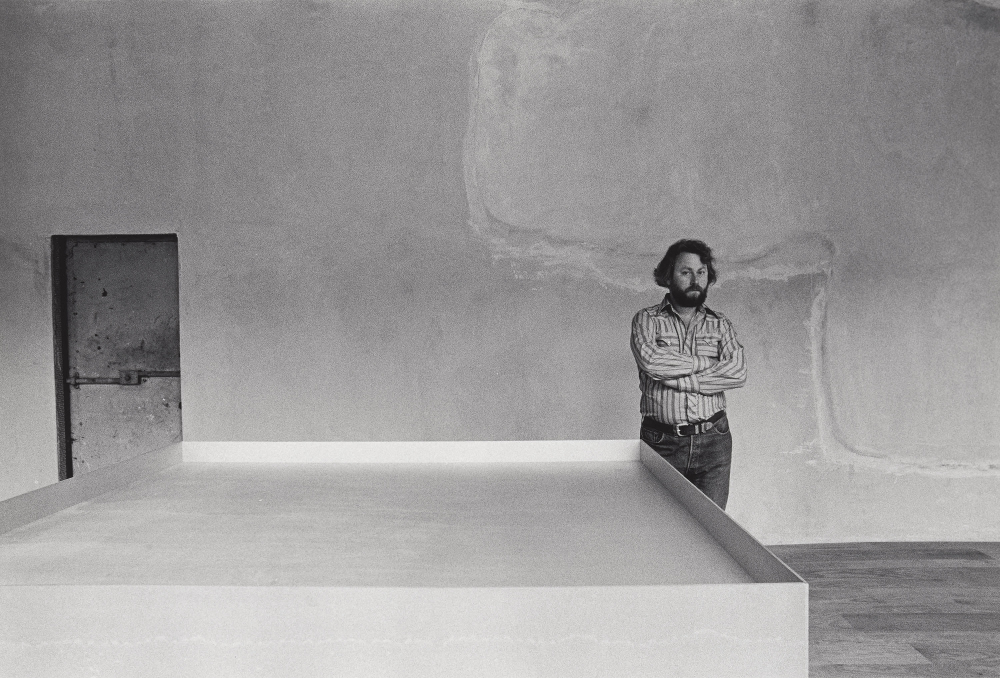

Donald Judd was an American artist associated with minimalism. In his work, Judd sought autonomy and clarity for the constructed object and the space created by it, ultimately achieving a rigorously democratic presentation without compositional hierarcy.
Thursday September 12th, 9:00PM in New York, NY 10003